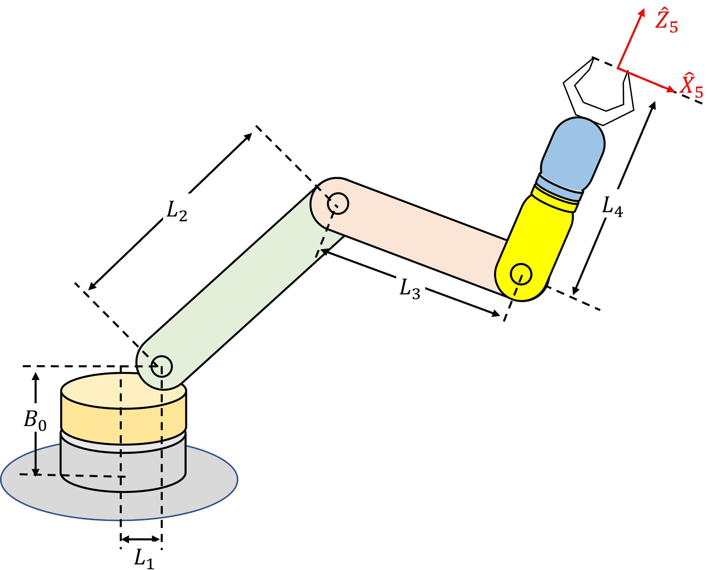

üî¨ Project1: Inverse Kinematics#
üìå Objectives#
The purpose of this project is to compare the theoretical solution to the inverse kinematics with a physical implementation on the 5 DoF robotic arm shown below. In this project, you will
Parameterize the robotic arm following the Denavit-Hartenberg (DH) convention.
Use Python to find the closed-form solutions to the inverse kinematic equations for the robot.
Write a Python script that picks up blocks from known locations and stacks them at a different location.
{kind=link}
üíª Procedure#
Setup#
Go to ECE487 Teams > General > Files > Class Materials > Python Files.
Open
proj1_fucntions.pyand copy everything except thetest_inverse_kinematicsfunction and paste it in yourxarm.pyat the end ofclass XArm(rbt.DHRobot)right before
""" ======================================================================
End of Class XArm
====================================================================== """
Copy the
test_inverse_kinematicsfunction and paste it right beforeif __name__ == '__main__':
Inverse kinematics of 5 DoF robotic arm#
Use the schematic diagram shown in the figure below for the forward/inverse kinematics of the robotic manipulator. Note that L1 is not 0.
{kind=link}
Note: Frame {5} is attached to the tooltip because of a bug in the robotics toolbox. It cannot render the end-effector link correctly if we use robot.tool = SE3([0, 0, L4])
Use the following values for B0, L1, L2, L3, and L4.
def __init__(self, simulation_only=False):
self.B0 = 0.090
self.L1 = 0.010 # <-- Ensure L1 is 0.01.
self.L2 = 0.105
self.L3 = 0.088
self.L4 = 0.174
üöö Deliverables#
Deliverable 1 (25 points)#
Complete the code inside the
invkinemethod.In your
invkine(), you must check the operating ranges of joint angles and should not return solutions that violate the operating ranges. Ensure you have the following two lines inside the constructor of XArm (def __init__(...)) and use thecheck_joint_angle_limitsmethod to check the ranges before returning frominvkine().
self.max_joint_angle = (pi/2, pi, pi/4, pi/2, pi/2)
self.min_joint_angle = (-pi/2, 0, -3*pi/4, -pi/2, -pi/2)
Demo
test_inverse_kinematics( )withsimulation_only=False. Although it is not required, it is strongly recommended to runtest_inverse_kinematics( )withsimulation_only=Trueto observe the simulation outputs.
Deliverable 2 (25 points)#
Write a Python script that moves a cube located at (25, 0, 0) to (20, 16, 0) and demo your robot moving the cube. You must use the inverse kinematics, not the forward kinematics with pre-calculated joint angles. You must lift the block no less than 10 cm before placing it down. You may be asked to move the cube from a different location.
Deliverable 3 (50 points)#
Write a Python script that moves a stack of five cubes located at (23, -15, 0) to (23, 15, 0) and demo your robot moving the cubes. You must use the inverse kinematics, not the forward kinematics with pre-calculated joint angles except the intial pose. You may be asked to move the cube from a different location.